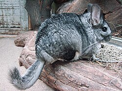

The Chinchilla Chinchilla, or more informally known as the "Short tailed chinchilla" due to their short tails, are the
far less common species of Chinchilla and was once even considered to be extinct!
Once commonly found in Chile, Argentina, Peru, and Bolivia. The chinchilla chinchillas are now mainly held in captivity, despite
being known as the "wild" genus of chinchilla.